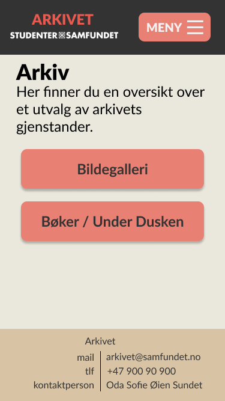

Contact person: Oda Sofie Øien Sundet, Leader of Arkivet
3. Purpose, goals and audience
The website's purpose is to make the archive more accessible and help strengthening their presence at Studentersamfundet.
One specific goal is to create a platform where former and older members of Studentersamfundet can help identify old pictures and audio clips from old meetings etc.
Another goal is to create a page for people who generally want to contribute to the preservation of the history of Studentersamfundet.
The websites main audience will be the current and former members of Studentersamfundet and anyone else that might be interested in its history.
This audience includes people of all ages, from young adults to senior citizens.
This can be challenging as young people and old people interact with webpages in different ways.
4. Navigational Structure
All the pages on this site will have the navigation bar (menu) included on the top of the page.
This means that all pages link all pages with a few exceptions: the galleries will be subdivided into categories not directly accessible from the menu.
We have chosen this clique structure to make every page accessible in as few clicks as possible. As this site has relatively few pages, this choice makes it tidier and easier to navigate.
Navigational Structure
5. Page Layout and Appearance
Mockup for generic features (Desktop)Mockup for generic features (Mobile)Mockup for mobile menu
Choosing the universal designe for the webpage was all about keeping it simple,
the customer isnt in need of anything flashy and want to be able to use the designe for several years.
We deliberately chose a color palette with low constrast colors and kept the designe simple and free of textures.
Too keep it from getting to flatt we make use of the reds to make "Arkivet" in the header and the interactive buttons popp,
and shadows for the meny.
For a touch of identity the main body and the meny togheter is made to kinda look like paperfolders. (desktop only)
The specific styling that applies to all pages is in the list below:
Font: "Lato" (with fallback to sans-serif) as this font is used a lot on the domain we are on
Color Palette
Light Background: #EAE7DC main background color
Beige Background: #D8C3A5 darker background for elements
Gray Background: #8E8D8A mainly used for the body background
Light Red: #E98074 color for interactive elements like buttons
Main Red: #E85A4F used for title in the header and other special text
Dark: #333333 this color is used for text and the header
Light: #F5F4ED color for input fields and text on darker backgrounds
6. Content
Home page - index.html
A short description of who they are and what they do.
If possible a little “news” box should be added, where they can put recent happenings that they can easily update themselves.
This page will be divided into two columns.
The leftmost will contain a header and one ore more paragraphs containing some generic information about Arkivet provided by the customer. The rightmost column will contain a box with news from Arkivet. This box should be scrollable if the content exceeds the box.
If the page is accessed from a device with a small screen resolution, the two columns should be placed above one another and the news box should grow with the content instead of being scrollable.
Mockup for index.html (Desktop)Mockup for index.html (Mobile)
Identification - identification.html
Gallery for pictures that need to be identified
Audio gallery for clips that need to be identified
Arkivet have old pictures and old recordings they need help to identify.
At the time being they would like to have one gallery for pictures and one for audio, but this may change.
It should be possible to have a description and title which is easy to update.
There should also be a “button” of sorts that opens a new email with a pre-fixed subject that matches the ID/name of the picture so people can easily send an email to the right place if they know anything about it.
(these functions should also be the same for the audio clips)
This page will contain a grid of either pictures or audio.
We plan to use JavaScript to load the gird of either pictures or audio clips.
Mockup for choice between pictures or audio in identifisering.html (Desktop)Mockup for choice between pictures or audio in identifisering.html (Mobile)
The picture grid will consist of thumbnails with a title placed above and a short description placed below.
The number of columns in the grid should follow the screen resolution in order to fit on mobile devices.
To avoid loading the original resolution of all the pictures at once, we will downscale the pictures to a reasonable scale (e.g.150px).
The thumbnails will then serve as a link to open the picture in full resolution.
When opened, the picture should be loaded and overlaid over the page within a box.
The box should contain the picture in full resolution, a title above it, a longer description and a mail link that automagically fills inn the subject field to contain the id/title of the picture.
This box should also link to the previous and next picture in the collection for easy browsing of the content.
While the box is open it is desirable that the left and right keys (swiping if on a touch device) also links to the previous and next pictures.
To achieve this functionality, we will use JavaScript to dynamically load the desired content and handle keyboard/touch inputs.
Mockup for picture part of identifisering.html (Desktop)Mockup for picture part of identifisering.html (Mobile)Mockup with picture open for identifisering.html (Desktop)Mockup with picture open for identifisering.html (Mobile)
The audio clip grid will function in much the same manner as the picture grid.
The exception is that the audio files should not be opened in a overlaid box, but rather be loaded in place.
The audio should be loaded to the page by clicking an icon and be autoplayed when loaded.
An audio player should also replace the icon when loaded.
Mockup for audio part of identifisering.html (Desktop)Mockup for audio part of identifisering.html (Mobile)
Archive - arkiv.html
General gallery
Books and Under Dusken
The general gallery is for showing off select highlight of fun things from the archive.
The overviews are for people to see what issues of Under Dusken and which books they have since they get a lot of inquiries from people that are looking for info from these.
It should also be easy to add more galleries and overviews so they can do it themselves later.
There is also a need to inform about overviews that exist but can't/won't be put out on a public page.
It should be informed that people need to send an email to get access to them.
This page comes in two parts: picture gallery and overview of written material.
We plan to use JavaScript to load either the interface for pictures or written material.
Mockup for choice between pictures and written material (Desktop)

Mockup for choice between pictures and written material (Mobile)
The picture gallery should be identical to the picture part of identification page except for the mail link and different pictures.
Mockup for picture part of arkiv.html (Desktop)Mockup for picture part of arkiv.html (Mobile)
The page for written material should contain a header, one or more paragraphs provided by the customer, and a filterable list of written material provided by the customer.
The list/table should contain the title/identifier of the material and the date of origin.
The exact content of each column may change if the customer wants more data to be displayed.
A search bar and date inputs should be present above the list/table in order to filter the list/table.
Additionally, there should be an option to sort by name and/or date.
Mockup for written material part of arkiv.html (Desktop)Mockup for written material part of arkiv.html (Mobile)
Contact us - kontakt.html
Contact information including: email address(es), postal address and information about office hours.
This page will contain a table/grid with the specified information.
Any field where a link is applicable should be a link.
Mockup for kontakt.html (Desktop)Mockup for kontakt.html (Mobile)
Medals - daljer.html
Information about lost and found for medals and how to get a new one.
There will be a need to put in some pictures in the text to “show” and not tell some key info.
This page will contain a header, a paragraph and a filterable selection of medals.
The medals should be displayed akin to the picture grid previously described in the archive section.
Mockup for daljer.html (Desktop)Mockup for daljer.html (Mobile)
Help us - hjelp_oss.html
This section will contain information about things the archive really want, what they already have and how to donate items.
The content of this page will be a header and one or more paragraphs provided by the customer.
Mockup for hjelp_oss.html (Desktop)Mockup for hjelp_oss.html (Mobile)
7. Minimum Requirements
We plan to store most of the data for the page in JSON and use JavaScript to put the data in the page.
By doing it this way, it will be easier to integrate with a back end in the future.
It will also be easier to decouple the design from the data.
These are four distinct JavaScript applications we intend to implement:
Functions that change the style of elements. This will, among other things, be used to open/close the menu.
Looping over a set of JSON-data in order to place various amounts of pictures and audio in a grid.
Code that opens, closes full resolution pictures in a "pop-up" overlaid box on the page.
A function that places text in elements based on choice of language.
8. Plan
Organizational Scheme
All the files for the web page will be gathered in a root folder web as this is the convention used where we host the site.
/css
style.css
/data
arkiv.json
daljer.json
hjelp_oss.json
identifisering.json
index.json
kontakt.json
/js
functions.js
/media
/audio
/icons
closewindow.gif
favicon.ico
launguage.gif
nextarrow.gif
placeholder.gif
play-audio.gif
prevarrow.gif
samfundet.gif
samfundetlogo-hvit.gif
/images
/modules
header.html
footer.html
arkiv.html
daljer.html
hjelp_oss.html
identifisering.html
index.html
kontakt.html
Work Division and Deadlines
Kia is responsible for ensuring we have a universal design. Oda is responsible for artwork.
Filename
Description
Responsible
Deadline
*.json
All the data from the customer i JSON format. Some translation may be needed.